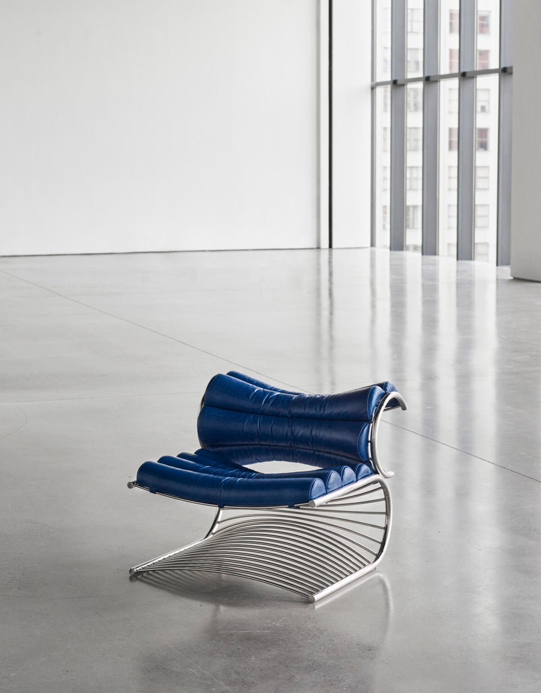
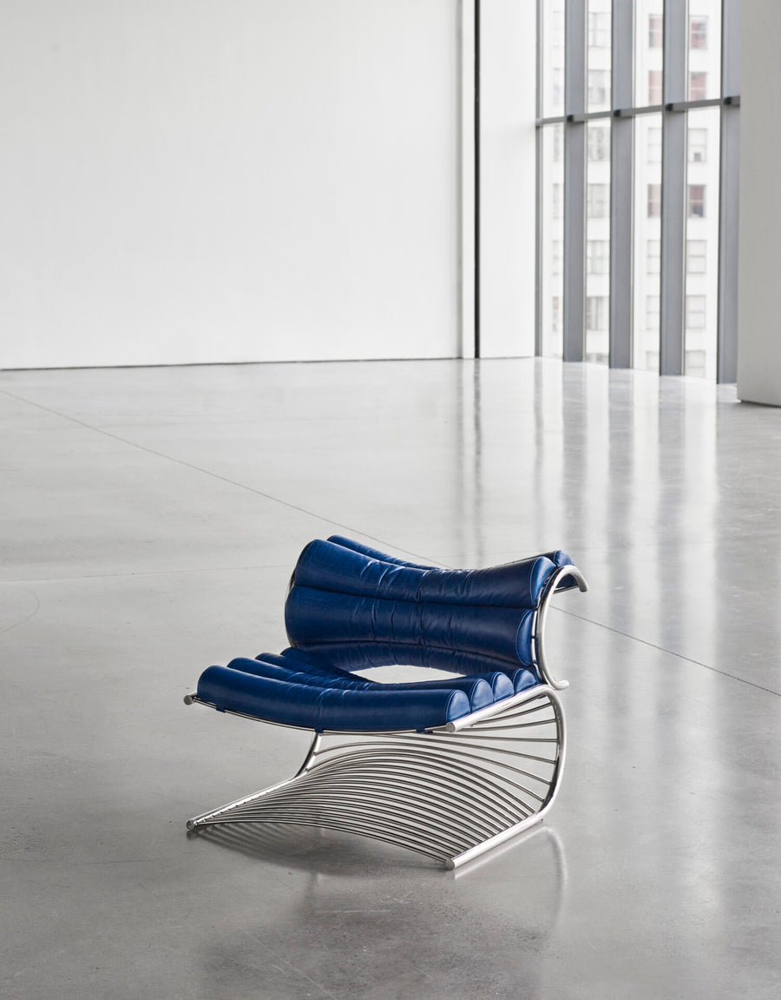

Verner Panton
Designer Danois
Fauteuil "S" (Modèle S-chair)
Circa 1965 (le modèle est emblématique des années 1960-1970)
Édition : Fritz Hansen (première édition en 1965, puis réédité par d'autres comme Vitra)
Description : Le fauteuil "S" est une œuvre emblématique du design futuriste et organique des années 60. Il se caractérise par une forme en spirale dynamique, souvent appelée forme en "S", qui marie l'esthétique sculpturales aux principes du confort moderne. L'alliance du métal chromé très poli et des boudins de cuir ou de vinyle rembourrés crée un contraste saisissant, définissant une pièce à la fois luxueuse et ludique. Ce design illustre l'approche innovante de Panton qui cherchait à "libérer" le meuble de ses pieds traditionnels.
Structure : L'élément porteur est une structure filiforme audacieuse, réalisée en Acier Chromé ou Inox poli, qui dessine une courbe en "S" d'une seule pièce. Cette structure en cintre, composée de lattes métalliques espacées, offre un support à la fois aérien et robuste à l'assise. Les coussins, souvent réalisés en Cuir (comme c'est le cas ici avec un bleu vibrant) ou en vinyle, sont de forme tubulaire ("boudins") et s'étendent de l'assise au dossier, épousant la courbe du métal pour un confort enveloppant.
Dimensions : H. (Hauteur totale) : 60-70 cm, L. (Largeur) : 80-85 cm, P. (Profondeur) : 100-110 cm, H. Assise (Hauteur de l'assise) : 30-35 cm (l'assise est souvent basse)